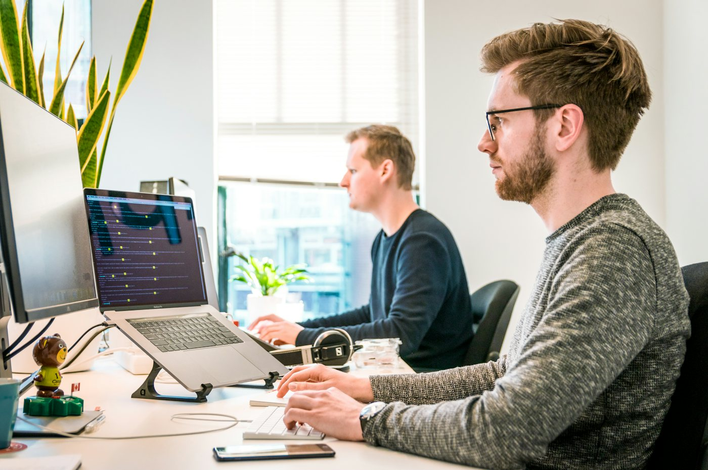

Gestão financeira
Contas a pagar e receber, fluxo de caixa, conciliação bancária e DRE.
Florianópolis — SC · Desde 2015
Mais de 1.200 empresas usam nosso sistema todos os dias, com 99,95% de disponibilidade no último ano.
Agendar demonstração
Contas a pagar e receber, fluxo de caixa, conciliação bancária e DRE.
Pedidos, nota fiscal eletrônica, controle de estoque e comissões.
Agendamento online, lembretes por WhatsApp e histórico do cliente.
Painéis prontos e exportação para planilha, atualizados em tempo real.
Software bom é o que a sua equipe usa sem precisar de treinamento
Trinta minutos por vídeo, usando exemplos do seu negócio.
Importamos clientes, produtos e histórico do sistema antigo.
Duas sessões com a sua equipe, gravadas para consulta.
Um especialista dedicado nos primeiros sessenta dias.

1.200empresas clientes
Clientes em vinte estados, de clínicas de bairro a redes com quarenta unidades.
99,95%de disponibilidade em 2025
Infraestrutura redundante em dois data centers no Brasil.
4 mintempo médio de resposta do suporte
Suporte próprio, sem robô, das 8h às 20h.
Engenheiro de software pela UFSC, com quinze anos em sistemas de gestão.

Montou o time de suporte e responde pela satisfação dos clientes.
Agende uma demonstração de trinta minutos. Sem compromisso e sem cartão de crédito.